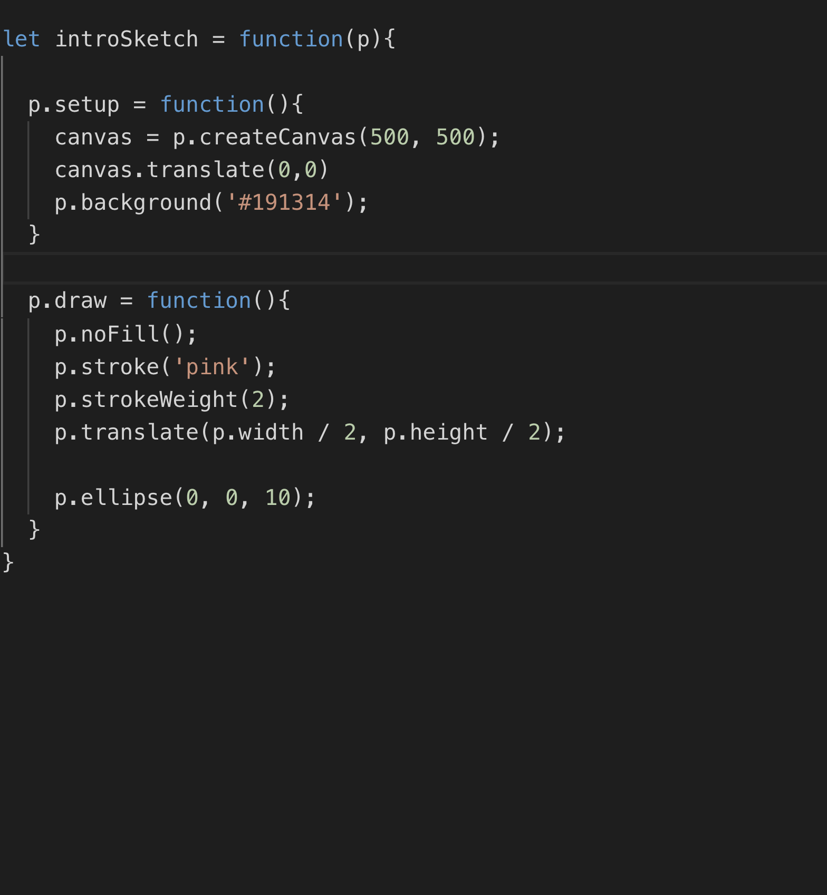
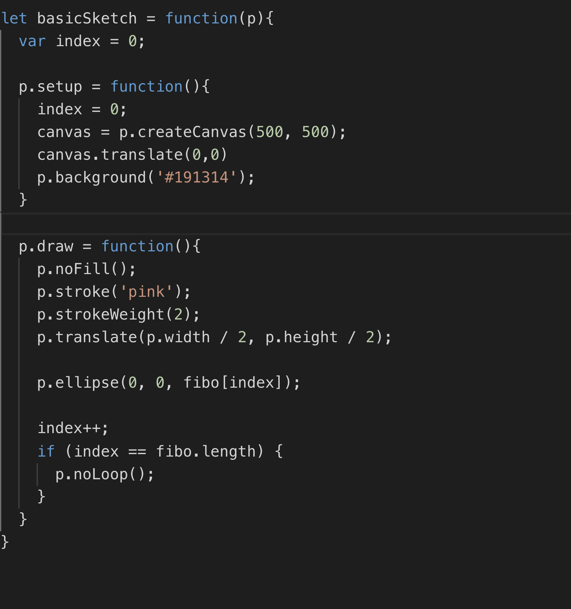
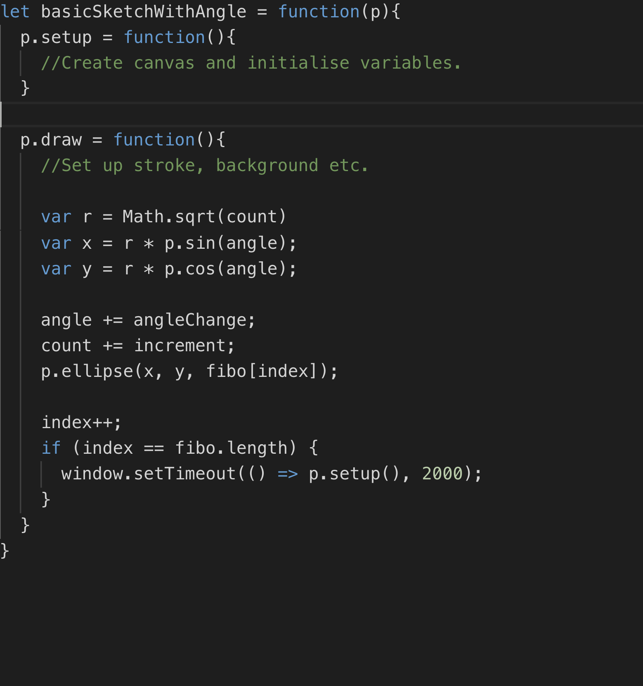
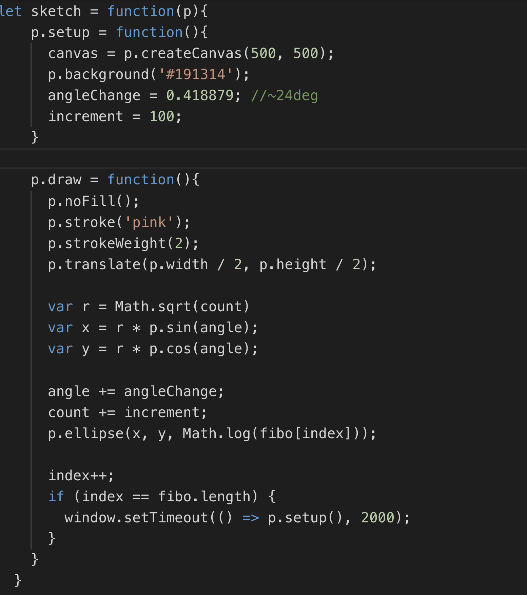
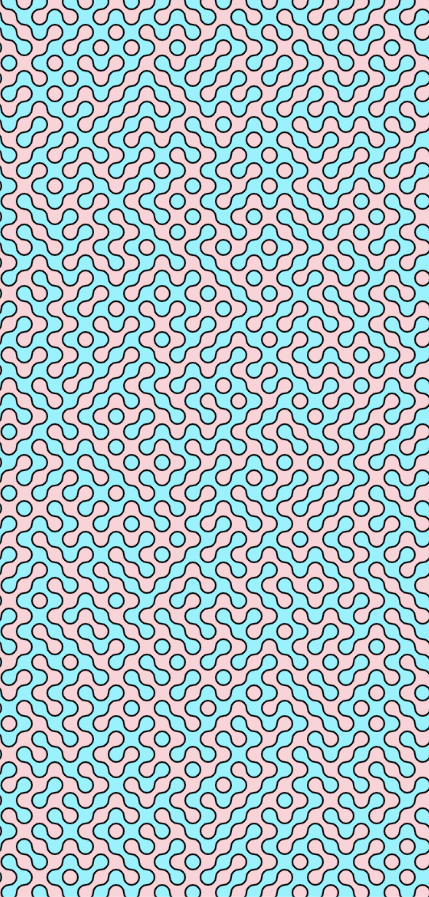
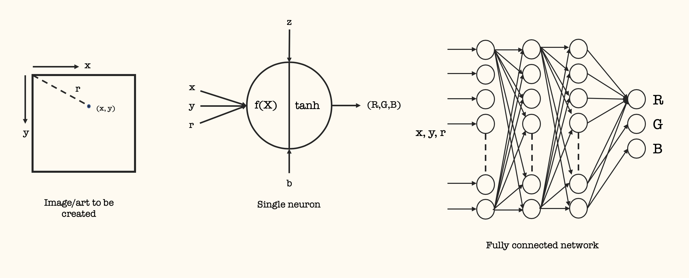

Can Code,
Will Generate Art
@purnimakamath
Director @wwcodesingapore
Evangelist @yow_conf
Will Generate Art
@purnimakamath
Director @wwcodesingapore
Evangelist @yow_conf

Creative coding techniques
- SVG or CSS Art
- Generative Art
- Art using Neural Networks
What is Generative Art?
Formal definition: Generative art refers to any art practice where the artist uses a system, such as a set of natural language rules, a computer program, a machine, or other procedural invention, which is set into motion with some degree of autonomy contributing to or resulting in a completed work of art.
Source: What is Generative Art? See references
FIBONACCI SEQUENCE (First 300) - #p5js
fn = fn-1 + fn-2
Sequence:
0, 1, 1, 2, 3, 5, 8, 13, 21, 34, 55...
300th number: 2.2223224462942035e+62
Sequence:
0, 1, 1, 2, 3, 5, 8, 13, 21, 34, 55...
300th number: 2.2223224462942035e+62
FIBONACCI SEQUENCE (First 300) - #p5js

FIBONACCI SEQUENCE (First 300) - #p5js

FIBONACCI SEQUENCE (First 300) - #p5js

FIBONACCI SEQUENCE (First 500) - #p5js

More art using p5.js



PERLIN NOISE - #d3js
PERLIN NOISE - #d3js

PERLIN NOISE - #d3js

PERLIN NOISE - #d3js
Infinite Fractals - #d3js
Mandelbrot Set
z = z2 + z
Biomorph
z = z5 + 0.5
Biomorph - periodic
z -> sin(z) (sin(re)*cosh(im) + cos(im)*sinh(re).i)
Infinite Fractals - #d3js
Cellular Automata - Game Of Life (Tweaked!) - #d3js
Generative Art using Neural Networks
Generative Art using Neural Networks
Generative Art using Neural Networks
- These are called “Compositional Pattern Producing Networks” or CPPNs.
- A term coined by Kenneth O. Stanley in a paper (see reference) in 2007
DEMO!
Generative Art using Neural Networks